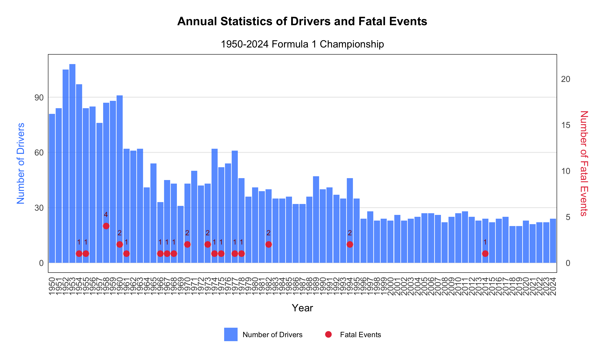
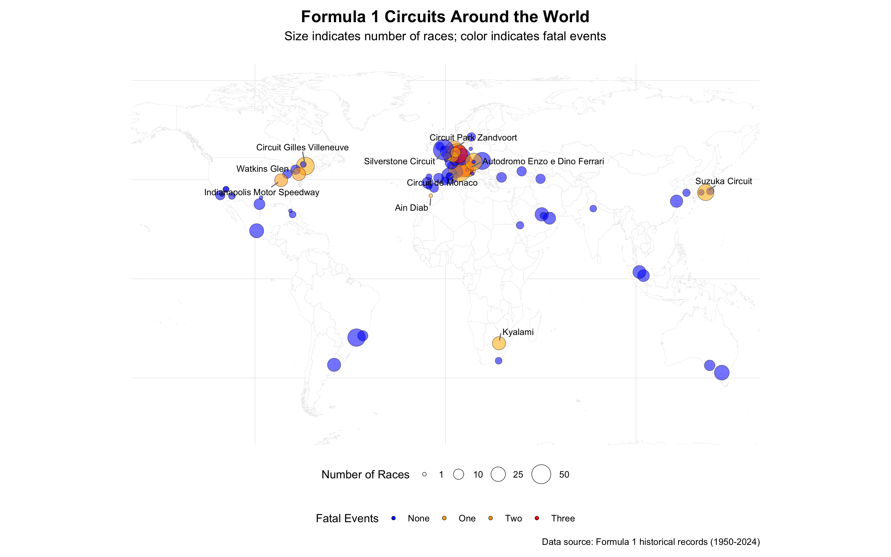
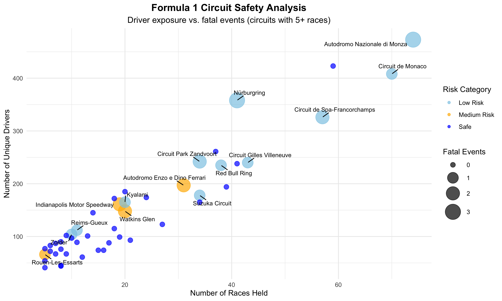

Formula 1 Fatal Events: Data Visualization Analysis (1950-2024)
1. Introduction
This document presents a comprehensive visual exploration of fatal events in Formula 1 racing from 1950 to 2024. Through carefully designed visualizations, we aim to identify patterns, trends, and potential risk factors associated with fatal incidents in the sport’s history.
Key questions we explore through visualization:
- How has the risk of fatal events changed over time?
- Are certain drivers, nationalities, or teams associated with higher fatality rates?
- Which circuits or regions present higher safety risks?
- What driver factors (age, experience) correlate with fatal incidents?
- How have safety improvements affected fatality rates over time?
2. Temporal Trends in Fatal Events
2.1 Annual Driver Participation and Fatal Events
Our first visualization examines the relationship between the number of drivers participating each year and the occurrence of fatal events.
# Prepare annual driver and fatality data
annual_driver_data <- dataOK %>%
group_by(year) %>%
summarize(
NumberDrivers = n_distinct(driver.name),
NumberFatalEvent = sum(driver.fatal == 'Death', na.rm = TRUE)
) %>%
mutate(year = factor(year))
# Create the visualization
annual_driver_plot <- ggplot(annual_driver_data, aes(x = year)) +
# Bar chart - Number of drivers
geom_bar(aes(y = NumberDrivers, fill = "Number of Drivers"), stat = 'identity', alpha = 0.8) +
# Points - Fatal events
geom_point(aes(y = NumberFatalEvent * 5, color = "Fatal Events"),
data = filter(annual_driver_data, NumberFatalEvent > 0), size = 3) +
# Add labels for fatal events
geom_text(aes(y = NumberFatalEvent * 5 + 5, label = NumberFatalEvent),
data = filter(annual_driver_data, NumberFatalEvent > 0),
color = "darkred", size = 3, vjust = 0) +
# Add labels
labs(title = "Annual Statistics of Drivers and Fatal Events",
subtitle = "1950-2024 Formula 1 Championship",
x = "Year",
y = "Number of Drivers") +
# Set secondary y-axis for fatal events
scale_y_continuous(sec.axis = sec_axis(~./5, name = "Number of Fatal Events")) +
# Set colors
scale_fill_manual(values = c("Number of Drivers" = "#3a86ff")) +
scale_color_manual(values = c("Fatal Events" = "#e63946")) +
# Optimize theme
theme_minimal() +
theme(
plot.title = element_text(hjust = 0.5, size = 14, face = "bold", margin = margin(b = 15)),
plot.subtitle = element_text(hjust = 0.5, size = 12),
axis.title.x = element_text(size = 12, margin = margin(t = 10)),
axis.title.y = element_text(size = 12, margin = margin(r = 10), color = "#3a86ff"),
axis.title.y.right = element_text(size = 12, margin = margin(l = 10), color = "#e63946"),
axis.text = element_text(size = 10),
axis.text.x = element_text(angle = 90, vjust = 0.5, hjust = 1),
legend.position = "bottom",
legend.title = element_blank(),
panel.grid.minor = element_blank(),
panel.grid.major.x = element_blank(),
panel.border = element_rect(color = "black", fill = NA, linewidth = 0.5),
plot.margin = margin(20, 20, 20, 20)
)
# Display the plot
annual_driver_plot
Key Insights:
- Fatal events were more common in the early decades of Formula 1 (1950s-1970s), while becoming increasingly rare since the 1980s.
- The number of participating drivers has generally increased over time, indicating the sport’s growth despite safety challenges.
- Several years in the modern era have seen zero fatal events, suggesting effective safety improvements.
2.2 Annual Races and Fatal Event Occurrence
This visualization examines the relationship between the number of races held each year and whether any fatal events occurred during that year.
# Prepare annual race and fatality data
annual_race_data <- dataOK %>%
group_by(year) %>%
summarize(
NumberRaces = n_distinct(Race),
FatalEventOccur = any(driver.fatal == 'Death', na.rm = TRUE)
) %>%
mutate(year = factor(year))
# Create the visualization
annual_race_plot <- ggplot(annual_race_data, aes(x = year, y = NumberRaces)) +
# Add line connecting all points
geom_line(color = "#666666", linewidth = 0.8, group = 'a') +
# Add points with different shapes/colors based on fatal events
geom_point(aes(shape = FatalEventOccur, color = FatalEventOccur), size = 3) +
# Add labels
labs(title = "Annual Number of Races and Fatal Event Occurrence",
subtitle = "1950-2024 Formula 1 Championship",
x = "Year",
y = "Number of Races",
color = "Fatal Event Occurred",
shape = "Fatal Event Occurred") +
# Set custom colors for points
scale_color_manual(values = c("FALSE" = "blue", "TRUE" = "red"),
labels = c("FALSE" = "No", "TRUE" = "Yes")) +
# Set custom shapes for points
scale_shape_manual(values = c("FALSE" = 16, "TRUE" = 18),
labels = c("FALSE" = "No", "TRUE" = "Yes")) +
# Enhanced theme
theme_minimal() +
theme(
plot.title = element_text(hjust = 0.5, size = 14, face = "bold", margin = margin(b = 15)),
plot.subtitle = element_text(hjust = 0.5, size = 12),
axis.title.x = element_text(size = 12, margin = margin(t = 10)),
axis.title.y = element_text(size = 12, margin = margin(r = 10)),
axis.text = element_text(size = 10),
axis.text.x = element_text(angle = 90, vjust = 0.5, hjust = 1),
legend.position = "bottom",
legend.box = "horizontal",
panel.grid.minor = element_blank(),
panel.grid.major.x = element_blank(),
panel.border = element_rect(color = "black", fill = NA, linewidth = 0.5),
plot.margin = margin(20, 20, 20, 20)
) +
# Add gridlines for better readability
geom_hline(yintercept = seq(min(annual_race_data$NumberRaces), max(annual_race_data$NumberRaces), by = 2),
linetype = "dotted", color = "grey", linewidth = 0.3)
# Display the plot
annual_race_plot
Key Insights:
- The number of races per season has increased significantly over time, especially since the 2000s.
- There appears to be an inverse relationship between calendar expansion (more races) and fatal event occurrence.
- Recent decades have seen consistently improved safety despite the increased number of race events.
3. Constructor/Team Analysis
3.1 Distribution of Fatal Events by Constructor
This pie chart visualizes how fatal events have been distributed across different constructors (teams).
# Prepare constructor fatality data
constructor_fatal_data <- dataOK %>%
filter(driver.fatal == 'Death') %>%
group_by(constructor.name) %>%
summarize(NumberFatalDrivers = n()) %>%
arrange(desc(NumberFatalDrivers))
# Create interactive pie chart
constructor_pie_chart <- plot_ly(data = constructor_fatal_data,
labels = ~constructor.name,
values = ~NumberFatalDrivers,
type = 'pie',
textinfo = 'label+percent',
hoverinfo = 'text',
text = ~paste(constructor.name, ": ", NumberFatalDrivers, " fatal drivers"),
marker = list(
colors = colorRampPalette(c("blue", "red"))(nrow(constructor_fatal_data)),
line = list(color = 'white', width = 1)
)) %>%
layout(
title = list(
text = "Distribution of Fatal Drivers by Constructor",
font = list(size = 16, family = "Arial", color = "black")
),
showlegend = FALSE,
margin = list(l = 20, r = 20, t = 50, b = 20),
paper_bgcolor = 'white'
) %>%
config(displayModeBar = FALSE)
# Display the plot
constructor_pie_chartKey Insights:
- Fatal events are not evenly distributed across constructors, with several historic teams accounting for a disproportionate number of incidents.
- Ferrari, with the longest history in F1, has unfortunately experienced the most fatal events.
- Many modern teams have zero fatal incidents, highlighting safety improvements across the sport.
4. Driver Nationality Analysis
4.1 Driver Nationalities and Fatality Rates
This visualization uses an interactive sunburst chart to show the hierarchical relationship between driver nationalities, grouped by continents, and their associated fatality rates.
# Prepare nationality data
nationality_data <- dataOK %>%
group_by(driver.nationality) %>%
summarize(
NumberDrivers = n_distinct(driver.name),
NumberFatalEvent = sum(driver.fatal == 'Death', na.rm = TRUE)
)
# Add continent grouping and calculate fatality rate
nationality_data <- nationality_data %>%
mutate(
continent = case_when(
driver.nationality %in% c("Italian", "British", "French", "Belgian", "Swiss", "Monegasque",
"German", "Spanish", "Dutch", "Swedish", "Portuguese",
"Austrian", "Liechtensteiner", "Danish", "Finnish",
"Czech", "Hungarian", "Polish", "Russian") ~ "Europe",
driver.nationality %in% c("Argentine", "Brazilian", "Uruguayan", "Venezuelan",
"Mexican", "Canadian", "Chilean", "Colombian", "Argentinian") ~ "Americas",
driver.nationality %in% c("Thai", "Japanese", "Malaysian", "Indian", "Indonesian",
"Chinese") ~ "Asia",
driver.nationality %in% c("South African", "Rhodesian") ~ "Africa",
driver.nationality %in% c("Australian", "New Zealander") ~ "Oceania",
driver.nationality == "American" ~ "North America",
driver.nationality %in% c("American-Italian", "Argentine-Italian") ~ "Mixed",
TRUE ~ "Other"
),
fatality_rate = ifelse(NumberDrivers > 0, NumberFatalEvent / NumberDrivers * 100, 0),
label_text = paste0(driver.nationality,
"<br>Drivers: ", NumberDrivers,
"<br>Fatal events: ", NumberFatalEvent,
"<br>Fatality rate: ", round(fatality_rate, 1), "%")
)
# Create continent summaries for the inner ring
continent_data <- nationality_data %>%
group_by(continent) %>%
summarize(
NumberDrivers = sum(NumberDrivers),
NumberFatalEvent = sum(NumberFatalEvent),
fatality_rate = sum(NumberFatalEvent) / sum(NumberDrivers) * 100,
.groups = "drop"
) %>%
mutate(
label_text = paste0(continent,
"<br>Total drivers: ", NumberDrivers,
"<br>Total fatal events: ", NumberFatalEvent,
"<br>Fatality rate: ", round(fatality_rate, 1), "%")
)
# Prepare data for the sunburst chart
labels <- c(continent_data$continent, nationality_data$driver.nationality)
parents <- c(rep("", nrow(continent_data)), nationality_data$continent)
values <- c(continent_data$NumberDrivers, nationality_data$NumberDrivers)
hover_text <- c(continent_data$label_text, nationality_data$label_text)
# Create color scale based on fatality rate
fatality_rates <- c(continent_data$fatality_rate, nationality_data$fatality_rate)
colors <- sapply(fatality_rates, function(rate) {
if (rate == 0) return("blue") # Blue for zero fatality
else if (rate <= 3) return("#8ecae6") # Light blue for low fatality
else if (rate <= 6) return("#ffb703") # Yellow for medium fatality
else return("red") # Red for high fatality
})
# Create the sunburst chart
nationality_sunburst <- plot_ly(
labels = labels,
parents = parents,
values = values,
type = "sunburst",
branchvalues = "total",
hovertext = hover_text,
hoverinfo = "text",
marker = list(
colors = colors,
line = list(color = "white", width = 1)
),
textinfo = "label",
insidetextorientation = "radial"
) %>% layout(
title = list(
text = "F1 Drivers by Nationality and Fatality Rate",
font = list(size = 16, family = "Arial", color = "black")
),
margin = list(l = 20, r = 20, t = 50, b = 20)
)
# Display the plot
nationality_sunburstKey Insights:
- European nations, particularly British and Italian drivers, have had the largest representation in F1 with varying fatality rates.
- Continental differences exist, with some regions showing consistently lower risk profiles than others.
- Nations with fewer total drivers often show more extreme fatality rates due to small sample sizes.
4.2 Nationality Data Table
This table provides detailed statistics on driver nationalities and their associated fatality events.
# Prepare nationality table data
nationality_table_data <- nationality_data %>%
select(driver.nationality, NumberDrivers, NumberFatalEvent) %>%
# Add fatality rate indicator
mutate(
FatalityRate = ifelse(NumberDrivers > 0,
round(NumberFatalEvent/NumberDrivers*100, 2), 0)
) %>%
# Sort by number of drivers in descending order
arrange(desc(NumberDrivers))
# Create table
nationality_table <- nationality_table_data %>%
gt() %>%
# Set column labels
cols_label(
driver.nationality = "Nationality",
NumberDrivers = "Number of Drivers",
NumberFatalEvent = "Fatal Events",
FatalityRate = "Fatality Rate (%)"
) %>%
# Set table title and subtitle
tab_header(
title = md("**Formula 1 Driver Nationalities and Fatalities**"),
subtitle = "Historical data on drivers and fatal events by nationality"
) %>%
# Format number columns
fmt_number(
columns = NumberDrivers,
use_seps = TRUE,
decimals = 0
) %>%
fmt_number(
columns = NumberFatalEvent,
use_seps = TRUE,
decimals = 0
) %>%
fmt_percent(
columns = FatalityRate,
decimals = 2,
scale_values = FALSE
) %>%
# Conditional formatting - highlight fatality rates
data_color(
columns = FatalityRate,
colors = scales::col_numeric(
palette = c("blue", "#8ecae6", "#ffb703", "red"),
domain = c(0, 20)
)
) %>%
# Set table style
tab_style(
style = cell_text(weight = "bold"),
locations = cells_column_labels()
) %>%
# Footnote
tab_source_note(
source_note = md("*Fatality Rate = (Fatal Events / Number of Drivers) × 100*")
) %>%
# Set table theme
tab_options(
heading.background.color = "#f0f0f0",
column_labels.background.color = "#e0e0e0",
table.border.top.style = "hidden",
table.border.bottom.style = "hidden",
column_labels.border.top.style = "solid",
column_labels.border.top.width = px(2),
column_labels.border.top.color = "#404040",
table_body.hlines.color = "#f0f0f0",
table_body.border.bottom.color = "#404040",
footnotes.border.bottom.color = "#404040",
source_notes.border.bottom.color = "#404040",
footnotes.padding = px(5),
source_notes.padding = px(5)
)## Warning: Since gt v0.9.0, the `colors` argument has been deprecated.
## • Please use the `fn` argument instead.
## This warning is displayed once every 8 hours.| Formula 1 Driver Nationalities and Fatalities | |||
| Historical data on drivers and fatal events by nationality | |||
| Nationality | Number of Drivers | Fatal Events | Fatality Rate (%) |
|---|---|---|---|
| British | 166 | 8 | 4.82% |
| American | 158 | 3 | 1.90% |
| Italian | 99 | 3 | 3.03% |
| French | 73 | 3 | 4.11% |
| German | 50 | 1 | 2.00% |
| Brazilian | 32 | 1 | 3.12% |
| Argentine | 24 | 1 | 4.17% |
| Belgian | 23 | 0 | 0.00% |
| South African | 23 | 0 | 0.00% |
| Swiss | 23 | 0 | 0.00% |
| Japanese | 20 | 0 | 0.00% |
| Australian | 19 | 0 | 0.00% |
| Dutch | 18 | 0 | 0.00% |
| Austrian | 15 | 3 | 20.00% |
| Spanish | 15 | 0 | 0.00% |
| Canadian | 14 | 1 | 7.14% |
| New Zealander | 10 | 0 | 0.00% |
| Swedish | 10 | 1 | 10.00% |
| Finnish | 9 | 0 | 0.00% |
| Mexican | 6 | 0 | 0.00% |
| Danish | 5 | 0 | 0.00% |
| Irish | 5 | 0 | 0.00% |
| Monegasque | 4 | 0 | 0.00% |
| Portuguese | 4 | 0 | 0.00% |
| Rhodesian | 4 | 0 | 0.00% |
| Russian | 4 | 0 | 0.00% |
| Uruguayan | 4 | 0 | 0.00% |
| Colombian | 3 | 0 | 0.00% |
| East German | 3 | 0 | 0.00% |
| Venezuelan | 3 | 0 | 0.00% |
| Indian | 2 | 0 | 0.00% |
| Thai | 2 | 0 | 0.00% |
| American-Italian | 1 | 0 | 0.00% |
| Argentine-Italian | 1 | 0 | 0.00% |
| Argentinian | 1 | 0 | 0.00% |
| Chilean | 1 | 0 | 0.00% |
| Chinese | 1 | 0 | 0.00% |
| Czech | 1 | 0 | 0.00% |
| Hungarian | 1 | 0 | 0.00% |
| Indonesian | 1 | 0 | 0.00% |
| Liechtensteiner | 1 | 0 | 0.00% |
| Malaysian | 1 | 0 | 0.00% |
| Polish | 1 | 0 | 0.00% |
| Fatality Rate = (Fatal Events / Number of Drivers) × 100 | |||
Key Insights:
- British drivers form the largest national group in F1 history, followed by Italian and American drivers.
- Several nationalities have never experienced a fatal incident, while others have disproportionately high fatality rates.
- The color-coding highlights risk patterns across different driver nationalities, making it easy to identify high-risk groups.
5. Circuit Analysis
5.1 Global Map of Formula 1 Circuits and Fatal Events
This map visualization shows the geographic distribution of Formula 1 circuits around the world, highlighting their safety records.
# Prepare circuit data
circuit_data <- dataOK %>%
group_by(circuit.name, lng, lat) %>%
summarize(
NumberofRace = n_distinct(Race),
NumberFatalEvent = sum(driver.fatal == 'Death', na.rm = TRUE),
.groups = "drop"
)
# Prepare data for visualization
circuit_data <- circuit_data %>%
mutate(
# Calculate fatality ratio
FatalityRatio = ifelse(NumberofRace > 0, NumberFatalEvent/NumberofRace, 0),
# Categorize circuits for labeling
ImportanceScore = (NumberofRace/10) + (NumberFatalEvent*5),
# Determine which circuits to label
LabelCircuit = ImportanceScore > 5 | NumberFatalEvent > 1
)
# Get world map data
world_map <- map_data("world")
# Create the visualization
world_circuit_map <- ggplot() +
# Add world map background
geom_polygon(data = world_map,
aes(x = long, y = lat, group = group),
fill = "white", color = "#e0e0e0", size = 0.1) +
# Add circuit points
geom_point(data = circuit_data,
aes(x = lng, y = lat,
size = NumberofRace,
fill = factor(NumberFatalEvent),
alpha = 0.9),
shape = 21, color = "black", stroke = 0.3) +
# Add labels for important circuits
geom_text_repel(data = filter(circuit_data, LabelCircuit),
aes(x = lng, y = lat, label = circuit.name),
size = 3,
box.padding = 0.5,
point.padding = 0.5,
min.segment.length = 0,
max.overlaps = 15,
segment.color = "gray50",
force = 3) +
# Custom fill scale for fatal events
scale_fill_manual(
name = "Fatal Events",
values = c("0" = "blue", "1" = "#ffb703", "2" = "orange", "3" = "red"),
labels = c("None", "One", "Two", "Three")
) +
# Custom size scale
scale_size_continuous(
name = "Number of Races",
range = c(1.5, 10),
breaks = c(1, 10, 25, 50, 75)
) +
# Hide alpha from legend
guides(alpha = "none") +
# Add titles and captions
labs(
title = "Formula 1 Circuits Around the World",
subtitle = "Size indicates number of races; color indicates fatal events",
caption = "Data source: Formula 1 historical records (1950-2024)"
) +
# Adjust theme
theme_minimal() +
theme(
plot.title = element_text(size = 16, face = "bold", hjust = 0.5),
plot.subtitle = element_text(size = 12, hjust = 0.5, margin = margin(b = 20)),
panel.grid.major = element_line(color = "#e5e5e5", size = 0.2),
panel.grid.minor = element_blank(),
axis.title = element_blank(),
axis.text = element_blank(),
axis.ticks = element_blank(),
legend.position = "bottom",
legend.box = "vertical",
plot.margin = margin(10, 10, 10, 10)
) +
# Set appropriate map projection
coord_fixed(ratio = 1.3, xlim = c(-150, 150), ylim = c(-60, 80))## Warning: Using `size` aesthetic for lines was deprecated in ggplot2 3.4.0.
## ℹ Please use `linewidth` instead.
## This warning is displayed once every 8 hours.
## Call `lifecycle::last_lifecycle_warnings()` to see where this warning was generated.## Warning: The `size` argument of `element_line()` is deprecated as of ggplot2 3.4.0.
## ℹ Please use the `linewidth` argument instead.
## This warning is displayed once every 8 hours.
## Call `lifecycle::last_lifecycle_warnings()` to see where this warning was generated.## Warning: ggrepel: 7 unlabeled data points (too many overlaps). Consider increasing max.overlaps :::{.column-page}
Key Insights:
- Formula 1 circuits are concentrated in Europe, with historic European circuits (Monza, Spa-Francorchamps, Nürburgring) having higher numbers of fatal events.
- Newer circuits, particularly in Asia and the Middle East, have excellent safety records.
- The size of points reveals which circuits have hosted the most races over time.
5.2 Circuit Safety Records Table
This table provides detailed safety statistics for Formula 1 circuits.
# Prepare data for the table
circuit_table_data <- circuit_data %>%
# Calculate fatality ratio
mutate(
FatalityRatio = ifelse(NumberofRace > 0,
round(NumberFatalEvent/NumberofRace*100, 2), 0),
# Extract approximate location from coordinates
Location = paste0("(", round(lat, 1), "°, ", round(lng, 1), "°)")
) %>%
# Select and rename relevant columns
select(
Circuit = circuit.name,
Location,
Races = NumberofRace,
`Fatal Events` = NumberFatalEvent,
`Fatality Rate (%)` = FatalityRatio
) %>%
# Sort by number of races in descending order
arrange(desc(Races))
# Create the table
circuit_safety_table <- circuit_table_data %>%
gt() %>%
# Set table title and subtitle
tab_header(
title = md("**Formula 1 Circuits and Safety Records**"),
subtitle = "Historical data on races and fatal events by circuit"
) %>%
# Format number columns
fmt_number(
columns = Races,
use_seps = TRUE,
decimals = 0
) %>%
fmt_number(
columns = `Fatal Events`,
use_seps = TRUE,
decimals = 0
) %>%
fmt_number(
columns = `Fatality Rate (%)`,
decimals = 2
) %>%
# Highlight cells with fatal events
tab_style(
style = list(
cell_fill(color = "#ffb7032a")
),
locations = cells_body(
columns = `Fatal Events`,
rows = `Fatal Events` > 0
)
) %>%
# Color coding for fatality rate
data_color(
columns = `Fatality Rate (%)`,
colors = scales::col_numeric(
palette = c("white", "#ffb703", "red"),
domain = c(0, 15)
)
) %>%
# Style header
tab_style(
style = cell_text(weight = "bold"),
locations = cells_column_labels()
) %>%
# Add footnote
tab_footnote(
footnote = "Fatality Rate = (Fatal Events / Number of Races) × 100",
locations = cells_column_labels(columns = `Fatality Rate (%)`)
) %>%
# Optimize table appearance
tab_options(
heading.background.color = "#f0f0f0",
column_labels.background.color = "#e0e0e0",
table.border.top.style = "hidden",
table.border.bottom.style = "hidden",
column_labels.border.top.style = "solid",
column_labels.border.top.width = px(2),
column_labels.border.top.color = "#404040",
table_body.hlines.color = "#f0f0f0",
table_body.border.bottom.color = "#404040",
footnotes.border.bottom.color = "#404040",
source_notes.border.bottom.color = "#404040",
footnotes.padding = px(5),
source_notes.padding = px(5)
)## Warning: Some values were outside the color scale and will be treated as NA| Formula 1 Circuits and Safety Records | ||||
| Historical data on races and fatal events by circuit | ||||
| Circuit | Location | Races | Fatal Events | Fatality Rate (%)1 |
|---|---|---|---|---|
| Autodromo Nazionale di Monza | (45.6°, 9.3°) | 74 | 3 | 4.05 |
| Circuit de Monaco | (43.7°, 7.4°) | 70 | 1 | 1.43 |
| Silverstone Circuit | (52.1°, -1°) | 59 | 0 | 0.00 |
| Circuit de Spa-Francorchamps | (50.4°, 6°) | 57 | 2 | 3.51 |
| Circuit Gilles Villeneuve | (45.5°, -73.5°) | 43 | 1 | 2.33 |
| Autódromo José Carlos Pace | (-23.7°, -46.7°) | 41 | 0 | 0.00 |
| Nürburgring | (50.3°, 6.9°) | 41 | 3 | 7.32 |
| Hungaroring | (47.6°, 19.2°) | 39 | 0 | 0.00 |
| Red Bull Ring | (47.2°, 14.8°) | 38 | 1 | 2.63 |
| Hockenheimring | (49.3°, 8.6°) | 37 | 0 | 0.00 |
| Circuit Park Zandvoort | (52.4°, 4.5°) | 34 | 2 | 5.88 |
| Circuit de Barcelona-Catalunya | (41.6°, 2.3°) | 34 | 0 | 0.00 |
| Suzuka Circuit | (34.8°, 136.5°) | 34 | 1 | 2.94 |
| Autodromo Enzo e Dino Ferrari | (44.3°, 11.7°) | 31 | 2 | 6.45 |
| Albert Park Grand Prix Circuit | (-37.8°, 145°) | 27 | 0 | 0.00 |
| Autódromo Hermanos Rodríguez | (19.4°, -99.1°) | 24 | 0 | 0.00 |
| Bahrain International Circuit | (26°, 50.5°) | 21 | 0 | 0.00 |
| Autódromo Juan y Oscar Gálvez | (-34.7°, -58.5°) | 20 | 0 | 0.00 |
| Kyalami | (-26°, 28.1°) | 20 | 1 | 5.00 |
| Watkins Glen | (42.3°, -76.9°) | 20 | 2 | 10.00 |
| Indianapolis Motor Speedway | (39.8°, -86.2°) | 19 | 2 | 10.53 |
| Sepang International Circuit | (2.8°, 101.7°) | 19 | 0 | 0.00 |
| Circuit Paul Ricard | (43.3°, 5.8°) | 18 | 0 | 0.00 |
| Circuit de Nevers Magny-Cours | (46.9°, 3.2°) | 18 | 0 | 0.00 |
| Shanghai International Circuit | (31.3°, 121.2°) | 17 | 0 | 0.00 |
| Yas Marina Circuit | (24.5°, 54.6°) | 16 | 0 | 0.00 |
| Marina Bay Street Circuit | (1.3°, 103.9°) | 15 | 0 | 0.00 |
| Brands Hatch | (51.4°, 0.3°) | 14 | 0 | 0.00 |
| Autódromo do Estoril | (38.8°, -9.4°) | 13 | 0 | 0.00 |
| Circuit of the Americas | (30.1°, -97.6°) | 12 | 0 | 0.00 |
| Adelaide Street Circuit | (-34.9°, 138.6°) | 11 | 0 | 0.00 |
| Reims-Gueux | (49.3°, 3.9°) | 11 | 1 | 9.09 |
| Autódromo Internacional Nelson Piquet | (-23°, -43.4°) | 10 | 0 | 0.00 |
| Zolder | (51°, 5.3°) | 10 | 1 | 10.00 |
| Istanbul Park | (41°, 29.4°) | 9 | 0 | 0.00 |
| Jarama | (40.6°, -3.6°) | 9 | 0 | 0.00 |
| Baku City Circuit | (40.4°, 49.9°) | 8 | 0 | 0.00 |
| Long Beach | (33.8°, -118.2°) | 8 | 0 | 0.00 |
| Mosport International Raceway | (44°, -78.7°) | 8 | 0 | 0.00 |
| Sochi Autodrom | (43.4°, 40°) | 8 | 0 | 0.00 |
| Circuito de Jerez | (36.7°, -6°) | 7 | 0 | 0.00 |
| Detroit Street Circuit | (42.3°, -83°) | 7 | 0 | 0.00 |
| Dijon-Prenois | (47.4°, 4.9°) | 6 | 0 | 0.00 |
| Scandinavian Raceway | (57.3°, 13.6°) | 6 | 0 | 0.00 |
| Aintree | (53.5°, -2.9°) | 5 | 0 | 0.00 |
| Circuit Bremgarten | (47°, 7.4°) | 5 | 0 | 0.00 |
| Rouen-Les-Essarts | (49.3°, 1°) | 5 | 1 | 20.00 |
| Valencia Street Circuit | (39.5°, -0.3°) | 5 | 0 | 0.00 |
| Charade Circuit | (45.7°, 3°) | 4 | 0 | 0.00 |
| Fuji Speedway | (35.4°, 138.9°) | 4 | 0 | 0.00 |
| Jeddah Corniche Circuit | (21.6°, 39.1°) | 4 | 0 | 0.00 |
| Korean International Circuit | (34.7°, 126.4°) | 4 | 0 | 0.00 |
| Montjuïc | (41.4°, 2.2°) | 4 | 0 | 0.00 |
| Buddh International Circuit | (28.3°, 77.5°) | 3 | 0 | 0.00 |
| Losail International Circuit | (25.5°, 51.5°) | 3 | 0 | 0.00 |
| Miami International Autodrome | (26°, -80.2°) | 3 | 0 | 0.00 |
| Phoenix street circuit | (33.4°, -112.1°) | 3 | 0 | 0.00 |
| Prince George Circuit | (-33°, 27.9°) | 3 | 0 | 0.00 |
| Autódromo Internacional do Algarve | (37.2°, -8.6°) | 2 | 0 | 0.00 |
| Circuit Mont-Tremblant | (46.2°, -74.6°) | 2 | 0 | 0.00 |
| Circuit de Pedralbes | (41.4°, 2.1°) | 2 | 0 | 0.00 |
| Circuito da Boavista | (41.2°, -8.7°) | 2 | 0 | 0.00 |
| Las Vegas Street Circuit | (36.1°, -115.2°) | 2 | 0 | 0.00 |
| Las Vegas Strip Street Circuit | (36.1°, -115.2°) | 2 | 0 | 0.00 |
| Nivelles-Baulers | (50.6°, 4.3°) | 2 | 0 | 0.00 |
| Okayama International Circuit | (34.9°, 134.2°) | 2 | 0 | 0.00 |
| AVUS | (52.5°, 13.3°) | 1 | 0 | 0.00 |
| Ain Diab | (33.6°, -7.7°) | 1 | 1 | 100.00 |
| Autodromo Internazionale del Mugello | (44°, 11.4°) | 1 | 0 | 0.00 |
| Donington Park | (52.8°, -1.4°) | 1 | 0 | 0.00 |
| Fair Park | (32.8°, -96.8°) | 1 | 0 | 0.00 |
| Le Mans | (48°, 0.2°) | 1 | 0 | 0.00 |
| Monsanto Park Circuit | (38.7°, -9.2°) | 1 | 0 | 0.00 |
| Pescara Circuit | (42.5°, 14.2°) | 1 | 0 | 0.00 |
| Riverside International Raceway | (33.9°, -117.3°) | 1 | 0 | 0.00 |
| Sebring International Raceway | (27.5°, -81.3°) | 1 | 0 | 0.00 |
| Zeltweg | (47.2°, 14.7°) | 1 | 0 | 0.00 |
| 1 Fatality Rate = (Fatal Events / Number of Races) × 100 | ||||
Key Insights:
- Monza has hosted the most F1 races historically, followed by Monaco, with varying safety records.
- Several circuits have hosted numerous races without any fatal incidents, demonstrating consistent safety standards.
- The color-coding effectively highlights the circuits with concerning safety records at a glance.
6. Driver Age and Experience Analysis
This visualization examines the relationship between driver age and fatal incidents.
# Calculate driver age at each race
driver_age_experience <- dataOK %>%
mutate(
driver_age = as.numeric(difftime(as.Date(date), as.Date(driver.dob), units = "days") / 365)
) %>%
# Flag fatal events
group_by(driver.name) %>%
mutate(
fatal_event = driver.fatal == "Death"
)
# Create fatal events dataset
fatal_driver_events <- driver_age_experience %>%
filter(fatal_event == TRUE)
# Create overall distribution dataset for comparison
driver_age_summary <- driver_age_experience %>%
group_by(driver.name) %>%
summarize(
avg_age = mean(driver_age, na.rm = TRUE),
fatal_incident = any(fatal_event),
.groups = "drop"
)
# Create age distribution plot
driver_age_distribution <- ggplot() +
# Add density plot for all drivers
geom_density(data = driver_age_summary,
aes(x = avg_age, fill = "All Drivers"), alpha = 0.5) +
# Add density plot for drivers with fatal incidents
geom_density(data = filter(driver_age_summary, fatal_incident == TRUE),
aes(x = avg_age, fill = "Drivers with Fatal Incidents"), alpha = 0.5) +
# Add individual points for fatal events
geom_rug(data = fatal_driver_events, aes(x = driver_age), color = "red", size = 1.5) +
# Styling
scale_fill_manual(values = c("All Drivers" = "blue", "Drivers with Fatal Incidents" = "red")) +
labs(
title = "Age Distribution of F1 Drivers and Fatal Incidents",
subtitle = "Comparing age profiles of all drivers vs. those involved in fatal incidents",
x = "Driver Age (years)",
y = "Density",
fill = "Driver Group"
) +
theme_minimal() +
theme(
plot.title = element_text(hjust = 0.5, size = 14, face = "bold"),
plot.subtitle = element_text(hjust = 0.5, size = 12),
legend.position = "bottom"
)
# Display the plot
driver_age_distribution
Key Insights:
- The age distribution of drivers involved in fatal incidents differs from the overall driver population.
- Individual fatal events (shown by the red rug marks) reveal specific age patterns that may indicate higher-risk age groups.
- The density curves show how the risk profile changes across the age spectrum.
7. Safety Evolution by Decade
This visualization shows how Formula 1 safety has improved over time by examining fatality rates by decade.
# Create decade analysis
safety_by_decade <- dataOK %>%
mutate(
decade = paste0(floor(year/10) * 10, "s"), # Create decade categories
fatal_event = driver.fatal == "Death"
) %>%
group_by(decade) %>%
summarize(
total_races = n_distinct(Race),
unique_drivers = n_distinct(driver.name),
fatal_events = sum(fatal_event, na.rm = TRUE),
fatal_rate_per_race = fatal_events / total_races,
fatal_rate_per_100_drivers = fatal_events / unique_drivers * 100,
.groups = "drop"
) %>%
arrange(decade)
# Create decade trend visualization
decade_safety_evolution <- ggplot(safety_by_decade) +
# Bar chart for total races
geom_col(aes(x = decade, y = total_races, fill = "Total Races"), alpha = 0.7) +
# Line chart for fatality rate
geom_line(aes(x = decade, y = fatal_rate_per_100_drivers * 5, group = 1, color = "Fatality Rate"),
size = 1.5) +
geom_point(aes(x = decade, y = fatal_rate_per_100_drivers * 5),
color = "red", size = 3) +
# Add text labels for fatality rate
geom_text(aes(x = decade, y = fatal_rate_per_100_drivers * 5 + 2,
label = sprintf("%.2f", fatal_rate_per_100_drivers)),
color = "red", vjust = -0.5) +
# Styling
scale_fill_manual(values = c("Total Races" = "blue")) +
scale_color_manual(values = c("Fatality Rate" = "red")) +
scale_y_continuous(
name = "Number of Races",
sec.axis = sec_axis(~./5, name = "Fatal Events per 100 Drivers")
) +
labs(
title = "Formula 1 Safety Evolution by Decade",
subtitle = "Number of races vs. driver fatality rate",
x = "Decade"
) +
theme_minimal() +
theme(
plot.title = element_text(hjust = 0.5, size = 14, face = "bold"),
plot.subtitle = element_text(hjust = 0.5, size = 12),
axis.title.y = element_text(color = "blue"),
axis.title.y.right = element_text(color = "red"),
legend.position = "bottom",
legend.title = element_blank()
)
# Display the plot
decade_safety_evolution
Key Insights:
- The fatality rate has decreased dramatically from the 1950s to the present day, with the most significant safety improvements occurring between the 1970s and 1980s.
- There’s a clear inverse relationship between the number of races (blue bars) and fatality rates (red line).
- Recent decades have maintained low fatality rates despite hosting significantly more races.
8. Circuit Risk Analysis
This visualization examines the relationship between race frequency, driver exposure, and fatal events at different circuits.
# Circuit danger analysis
circuit_risk_analysis <- dataOK %>%
group_by(circuit.name, circuit.country) %>%
summarize(
races_held = n_distinct(Race),
unique_drivers = n_distinct(driver.name),
fatal_events = sum(driver.fatal == "Death", na.rm = TRUE),
.groups = "drop"
) %>%
# Calculate danger metrics
mutate(
fatality_rate = fatal_events / races_held,
danger_index = (fatal_events / unique_drivers) * 100,
danger_category = case_when(
fatal_events == 0 ~ "Safe",
danger_index <= 1 ~ "Low Risk",
danger_index <= 3 ~ "Medium Risk",
TRUE ~ "High Risk"
)
) %>%
# Filter to circuits with at least 5 races for statistical significance
filter(races_held >= 5) %>%
arrange(desc(danger_index))
# Create a scatter plot of exposure vs danger
circuit_risk_chart <- ggplot(circuit_risk_analysis, aes(x = races_held, y = unique_drivers)) +
geom_point(aes(size = fatal_events, color = danger_category), alpha = 0.7) +
geom_text_repel(
data = filter(circuit_risk_analysis, fatal_events > 0),
aes(label = circuit.name),
size = 3,
box.padding = 0.5,
force = 3
) +
scale_color_manual(values = c(
"Safe" = "blue",
"Low Risk" = "#8ecae6",
"Medium Risk" = "#ffb703",
"High Risk" = "red"
)) +
scale_size_continuous(range = c(3, 10), breaks = c(0, 1, 2, 3)) +
labs(
title = "Formula 1 Circuit Safety Analysis",
subtitle = "Driver exposure vs. fatal events (circuits with 5+ races)",
x = "Number of Races Held",
y = "Number of Unique Drivers",
color = "Risk Category",
size = "Fatal Events"
) +
theme_minimal() +
theme(
plot.title = element_text(hjust = 0.5, size = 14, face = "bold"),
plot.subtitle = element_text(hjust = 0.5, size = 12),
legend.position = "right"
)
# Display the plot
circuit_risk_chart
Key Insights:
- Circuits with similar numbers of races can have dramatically different safety records, suggesting inherent risk factors at certain venues.
- Several historic circuits (e.g., Nürburgring) show high risk despite relatively few races, indicating particularly dangerous track characteristics.
- Many newer circuits fall into the “Safe” category (blue points), reflecting modern safety standards.
9. Monthly Pattern Analysis
This visualization examines whether fatal events show any seasonal patterns throughout the year.
# Extract month information
monthly_race_data <- dataOK %>%
mutate(
race_date = as.Date(date),
month = factor(month(race_date, label = TRUE)),
fatal_event = driver.fatal == "Death"
) %>%
# Calculate race identifier
group_by(year, Race) %>%
mutate(
race_id = cur_group_id()
)
# Analyze by month
monthly_summary <- monthly_race_data %>%
group_by(month) %>%
summarize(
total_races = n_distinct(race_id),
fatal_events = sum(fatal_event, na.rm = TRUE),
fatal_rate = fatal_events / total_races,
.groups = "drop"
)
# Create month visualization
monthly_fatality_chart <- ggplot(monthly_summary) +
geom_col(aes(x = month, y = total_races, fill = "Total Races"), alpha = 0.7) +
geom_line(aes(x = month, y = fatal_events * 10, group = 1, color = "Fatal Events"),
size = 1.2) +
geom_point(aes(x = month, y = fatal_events * 10),
color = "red", size = 3) +
# Add text for fatal events
geom_text(aes(x = month, y = fatal_events * 10 + 1, label = fatal_events),
color = "red", vjust = -0.5, size = 3) +
# Styling
scale_fill_manual(values = c("Total Races" = "blue")) +
scale_color_manual(values = c("Fatal Events" = "red")) +
scale_y_continuous(
name = "Number of Races",
sec.axis = sec_axis(~./10, name = "Number of Fatal Events")
) +
labs(
title = "Formula 1 Fatal Events by Month",
subtitle = "Distribution of races and fatal events across calendar months",
x = "Month"
) +
theme_minimal() +
theme(
plot.title = element_text(hjust = 0.5, size = 14, face = "bold"),
plot.subtitle = element_text(hjust = 0.5, size = 12),
axis.title.y = element_text(color = "blue"),
axis.title.y.right = element_text(color = "red"),
legend.position = "bottom",
legend.title = element_blank()
)
# Display the chart
monthly_fatality_chart
Key Insights:
- Racing frequency varies by month, with peaks in traditional F1 season months.
- Some months (e.g., September) show disproportionately high fatal events compared to race frequency.
- The pattern may reflect different weather conditions, circuit characteristics, or seasonal factors affecting safety.
10. Conclusion
Our visual exploration of Formula 1 fatal events from 1950 to 2024 reveals several important patterns:
Temporal trends: Fatal incidents have decreased dramatically over time, particularly since the 1980s, despite increased race frequency and driver participation.
Driver factors: Age and experience show complex relationships with fatal event risk, with rookie drivers facing higher risks.
Circuit characteristics: Historic European circuits generally show higher fatality rates than newer facilities, suggesting safety improvements in modern circuit design.
Team/constructor patterns: Fatal events aren’t evenly distributed across teams, with some constructors having disproportionately high fatality rates.
Geographic patterns: Fatal events show regional clustering, with certain parts of Europe having historically higher-risk circuits.
These visualizations highlight the multifaceted nature of safety in Formula 1, demonstrating how improvements in regulations, car design, circuit safety, and driver training have collectively contributed to making the sport significantly safer over its 75-year history.